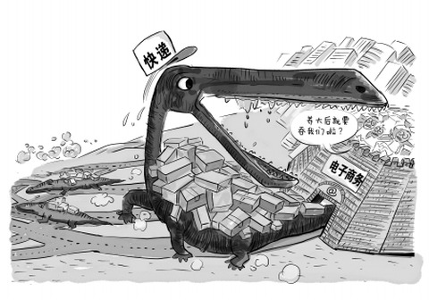

此外，同为快递的申通开始筹划做网络超市，旗下的“申通购购”已经开通运营，主要商品为食品和生活类用品，申通还于2009年设立“久久票务网”（后改名“铁友网”）。另一家快递巨头圆通，早在2008年建立了专注于销售农产品的“圆通新农网”。中国邮政与香港TOM集团于2008年创办“邮乐网”。
原本快递要完成电子商务的最后一个环节——物流配送，现在快递企业纷纷涉足电商，试图在物流的基础上向上游逆袭，这会是一场大战吗？

漫画来源于杨仕成
快递逆袭电商的出发点
1：守住未来
就目前国内电子商务市场而言，电子商务领域的竞争已经十分激烈，在经过大浪淘沙式的淘汰赛后，电子商务的格局日渐明朗。快递企业选择做电商是基于未来的考虑：当大的电商平台有自己的物流以后，快递企业担心自己会被边缘化。所以快递做电商更多是一种防御。京东凡客亚马逊中国之类的大电子商务平台，拥有自己的物流体系，物流运输和快递服务非常到位，而以物流为主要业务的快递企业，在某些地方还不如电商。
2：数据深挖
快递企业拥有很长时间的物流配送数据，可以毫不夸张的说中国哪个城市哪个片区的人喜欢在哪个季节什么时间买什么东西等之类的数据在快递企业手里都有，传统的电商所拥有的数据只是基于自己平台上的用户购买数据得出的结果，而快递企业所拥有的数据就包括各行业各平台的电商物流数据，如果把网购比作生产一件产品，那物流就像生产一件产品需要完成的必须工序一样，这也是快递企业手里拥有的核心竞争力之一。
3：区域化优势
物流企业经过很长时间的发展和沉淀，在物流的地域规划和区域化方面有独特的优势，在大电商平台根据综合成本考虑选址物流基地时，快递企业已经可以根据自己网点的业务量来布局，同时，借助已有的快递网点优势，能把网购最关键的最后一公里做好，这是大的电商平台所无法比拟的。
快递入电商的短板
1：品牌认知和推广
电商面临最大的问题就是品牌推广和认知，如今的电商企业无一例外都在进行烧钱换流量，互联网广告有一半都是电商企业在买单，而且，在目前大的电商企业不发生变故的情况下， 格局和品牌效应已经初显，京东淘宝亚马逊中国当当凡客都已经有自己的品牌效应，甚至于网民在网购的时候都会选择上述平台，原因很简单，有品牌效应。人们会选择在京东买电器，凡客买衣服，他们来顺风买什么呢？
2：采购和供应链
电商网站卖东西如同杂货店一样，只有足够多的商品才能吸引更多的用户，也才会聚集更多的供应商。而新兴的电商平台要找到合适的供应商，是个比较艰难的过程。如何能在商品采购上保证种类和质量，这是快递企业需要面临的一个大的挑战。
3：运营根基
快递和电子商务之间，运营模式与思维，人才与团队都差别很大，分属两个不同的模式下运营的产品，如何分配内部资源，如何能在不损害快递根基的前提下做好电商配送，业务重心和资源的整合问题，这些都是从快递到电商转变需要面临的问题，没有电商沉淀的快递，单靠物流数据，能不能做起来，还要打一个问号。
新模式的探索
快递和电商一定不能互相融合吗？彼此之间一定是你死我活的关系？
快递企业一直希望依托自己的物流优势进军电商，而电商又想通过自己搭建物流来降低成本，中国的企业有一个很大的毛病就是做大了就想通吃，其实他们二者之间完全可以互相帮助彼此共赢。
天猫的电商生态系统就是一个不错的模式，天猫联手九大快递公司展开深度合作，打造社会化物流平台，而不是自建物流，利用产生的订单和信息与合作伙伴去深入合作，天猫搭建销售平台，把所有的物流整合分发。这样既保证了服务，还能让彼此在各自的环节分到一杯羹，何乐而不为呢？